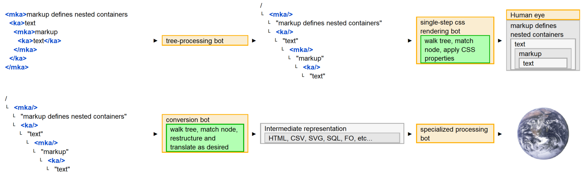

Any number of strategic computing projects have failed because organizations couldn't get folks to use XML editors.
Why would an individual consider this craziness? Everyone's plate is full. This requires learning and ever since Microsoft took the margins out of WP through bounding, investments in this space have withered, for both individuals and organizations. WP is an ignored necessity, driven by cost-minimization strategies.
The standard XML consultant's answer to any question is, “That depends.” Markup is largely policy neutral. You can apply it to almost any set of value optimizations. Markup languages are adopted, customized, and designed around a purpose. When you use someone else's markup, you are organizing your information around someone else's semantic values and value propositions. That's a cost driver.
Everyone's plate is full because the world is increasingly complex. There are a lot of bots that help, but they're all pretty much built by someone else to help them meet their needs.
What if folks had bots of their own? Little bots that could be put together in an afternoon? Organized around personally-valuable information. Individuals creating their own little languages and bots inverts markup's dominant value propositions.
Figure 7. Generalized markup
|  |
When concluding XML courses I challenge students to build their own “bootcamp app”:
An XML fragment of information that has personal meaning.
Some CSS to make it pretty and a DTD to validate it.
Extra credit for an XSLT to HTML conversion. With that set of languages you can code the guts of almost any automated solution.
Pro tip: Add a text processing language to get stuff into markup.
“ AWK is awful good.” | ||
| --Test subject | ||
Reports ranged from ham radio datasets to a DVD collection with a color scheme that would drive a person to drink. The common denominator? Feelings of accomplishment and excitement about the future. Personal markup is compelling. It's the ultimate computer game.
When markup is optimized around individual purpose, it's an enabler, with corresponding changes to brain chemistry. A recent episode of the Public Broadcasting Series, Nova, focused on the neurochemistry of decision making.
Agency is powerful stuff. Life is unscripted. Perceptions of control are powerful. Actual, impactful, personally-meaningful operational control? Priceless. | ||
| --Test subject | ||
The brain chemistry associated with fear is another important factor. Fearful adults staring at blank screens with their jobs on the line don't learn much. Fearful improvisers tend to get frantic. Open another document template and experiment with markup is like playdough and enables much more creativity.
...when people are made afraid, their amygdala starts firing and their prefrontal cortex literally is starved of blood. You can’t have both things [fear and logic] going. And so if you’re asking people to sort of be in their rational brain..., then you need to present this as the possibility of creating something good... | ||
| --Anat Shenker-Osorio | ||
Future research hopes to work with neuro-divergent individuals, including those with sensory-integration impairments who have had to create very sophisticated coping mechanisms and supporting ontologies. How much of this knowledge is tacit and inexpressible? How much could be formalized as language and would there be benefits? Stories heal. Would this form of storytelling amplify and add additional dimensions to those benefits? | ||
| --Primary researcher | ||
Giving voice involves two dimensions, the content and the pipeline that communicates that voice. Authoring content that is designed for collaboration and integrates easily with existing computing infrastructures adds social dimensions to individual value propositions.
Our voices are so valuable that we're the only animal that chokes itself to death. Would average individuals actually use markup to model their realities? Look at what they do with spreadsheets and the various cloud integration toolkits. This is an accessibility/ price/ performance thing. | ||
| --Test subject | ||